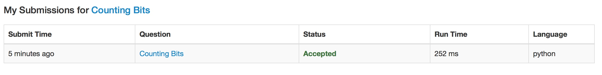

Given a non negative integer number num. For every numbers i in the range 0 ≤ i ≤ num calculate the number of 1's in their binary representation and return them as an array.
Example:
For num = 5 you should return [0,1,1,2,1,2].Follow up:
It is very easy to come up with a solution with run time O(n*sizeof(integer)). But can you do it in linear time O(n) /possibly in a single pass?
Space complexity should be O(n).
Can you do it like a boss? Do it without using any builtin function like __builtin_popcount in c++ or in any other language.
首先，在规定的时间复杂度下，不可能进行每一步都计算，因此考虑到 2n-1 与 2n 时的关联，利用前 2n-1 次方去推导后面2n 位。
考虑前16位:
[0, 1, 1, 2, 1, 2, 2, 3, 1, 2, 2, 3, 2, 3, 3, 4]
从二进制表示法开始入手， 如下:
| 十进制 | 二进制 | 十进制 | 二进制 |
|---|---|---|---|
| 0 | 0 | 8 | 1000 |
| 1 | 01 | 9 | 1001 |
| 2 | 10 | 10 | 1010 |
| 3 | 11 | 11 | 1011 |
| 4 | 100 | 12 | 1100 |
| 5 | 101 | 13 | 1101 |
| 6 | 110 | 14 | 1110 |
| 7 | 111 | 15 | 1111 |
对于任意 x， 我们可以把 x 拆成一个最大的 2n-1 + 一个数(n表示当前二进制的位数)，比如:
\[5 = 2^2 + 2^0 + 0\\\
6 = 2^2 + 2^1 + 0\\\
14 = 2^3 + 6 = 2^3 + 2^2 + 2^1 + 0\]
因此在计算 x 的二进制中 1 的个数的时候，如计算 5(= 101)，可以通过计算 1 中 1 的个数，然后加上二进制最高位的1，这样就可以不需要计算每一个的二进制，直接通过前 2^n-1来计算。
因此核心算法如下:
\[f(x) = f(x - 2^n) + 1\]
最后加上的 1 即为二进制最高位的 1.
Python 代码如下：
class Solution(object):
def countBits(self, num):
"""
:type num: int
:rtype: List[int]
"""
array = [0]
flag = 0 # current level
target = num + 1
for i in range(1, target):
if i % pow(2, flag+1) == 0:
flag+=1 #if a num is 2^n, then level++
array.append(array[i-pow(2, flag)] + 1)
return array

算法复杂度不是很好，其中需要算平方的部分可能耗时比较多，不过相对于一个个去算已经提高了很多了。
应该还是有提升的空间的，需要进一步思考。